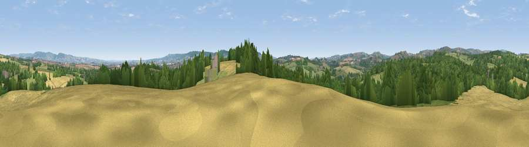

Viewpoint near Langford Budville
#24225 in England · top 51% of its area beats it · near Langford Budville · access?Where it is
The exact computed spot (ST 10575 23025). Click the marker for map links.
Public access: no public right of way or access land is recorded at this exact spot — it may be on private land. Computed from Natural England's CRoW access layer and OpenStreetMap rights of way — not the legal definitive map. Always verify locally.
The view, rendered

A 360° render of this exact spot computed from the terrain model, tree cover and land cover — summer colours, afternoon light, calibrated against photographs of famous viewpoints. Real trees, hedges and buildings will differ in detail.
The panorama
Grey silhouette: terrain skyline in each direction (720 bearings, Earth curvature and refraction included). Dashed green: skyline with trees (+15 m) and buildings (+8 m) as obstacles. Blue strip: how far the ground is visible on each bearing.
Where the view opens
Wedge length = distance to the farthest visible ground on that bearing (vegetation-aware). Rings at 10, 25 and 50 km.
What fills the view
39% woodland · 32% grassland · 28% cropland · 1% built-up
Angular shares of the visible panorama (visual magnitude), not map area. Landscape diversity 0.50 (0–1 Shannon).
Key numbers
More beautiful places nearby
The staircase of upgrades: each row has a higher view potential than everything closer. Driving times are estimates from straight-line distance, calibrated against real road routing — check an actual route before setting out.
| Place | Direction | Drive | Score |
|---|---|---|---|
| Viewpoint near Langford Budville | S · 1 km | ~3 min | 51.1 |
| Viewpoint near Milverton | N · 3 km | ~7 min | 65.1 |
| Viewpoint near Wiveliscombe | WNW · 5 km | ~11 min | 75.1 |
| Viewpoint near Pitminster | ESE · 11 km | ~20 min | 77.3 |
| Viewpoint near Broomfield | NE · 13 km | ~23 min | 78.5 |
| Viewpoint near Elworthy | NNW · 13 km | ~23 min | 79.2 |
| Cothelstone Hill | NE · 13 km | ~24 min | 82.1 |
| Viewpoint near West Bagborough | NNE · 13 km | ~24 min | 84.3 |
50.99964, -3.27576 · source: screening · position refined by local search. Computed location — check access rights before visiting.